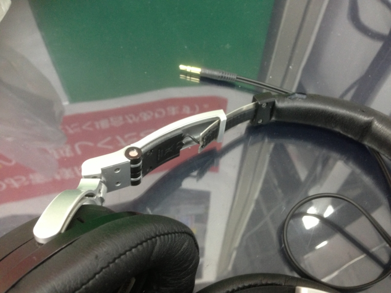

ヘッドフォンの受難
公開日：

先月、3年ぐらい愛用していたヘッドフォン（ヘッドフォンが退院！ - だるろぐ）をとうとう壊してしまった。まぁ、自分にしては物持ちのよい方だったと思う。ヨドバシカメラに修理を依頼したのだけれど、もうすでに部品がないから修理できないとの由。ノイズキャンセラー機構などはまだ生きていたのでとてももったいないと思ったけれど、それもしかたない。

DENON 密閉型オーバーヘッドヘッドホン ノイズキャンセリング ブラック AH-NC800K
- 出版社/メーカー: デノン
- 発売日: 2010/08/10
- メディア: エレクトロニクス
- クリック: 5回
- この商品を含むブログを見る
で、問題は後継機だ。
昨日、錦糸町のヨドバシカメラでいろいろ試させてもらったのだけど、いいなーと思ったのは以下の二つ。

audio-technica QuietPoint 密閉型ヘッドホン ノイズキャンセリング ブラック ATH-ANC9
- 出版社/メーカー: オーディオテクニカ
- 発売日: 2012/02/17
- メディア: エレクトロニクス
- クリック: 2回
- この商品を含むブログを見る
これはコスパが非常にいいと思った（ヨドバシで実売2万程度）。装着感もこれまで使っていた DENON のモノよりよく、とても安定している。
ただ、ちょっと気になるのが、NC 機能のボタンが固く、また切り替えに時間がかかること。ボタンを ON にしてノイズキャンセルが働くまでに、一拍ぐらいの間がある。まぁ、問題はないのだけど。
あと、1回だけ「ミュー」と耳を指すような妙な音を立てた。よくわからないけれど、恒常的に起きるものだったらいやだな。不特定多数が視聴する店頭でのことなので、製品そのものの問題ではない気もする。

SONY 密閉型ノイズキャンセリングヘッドホン iPhone/iPod/iPad対応リモコン・マイク付 MDR-1RNC
- 出版社/メーカー: ソニー
- 発売日: 2012/10/27
- メディア: エレクトロニクス
- クリック: 6回
- この商品を含むブログ (2件) を見る
一方、これはつけた瞬間、「あ、ほしいなぁ」と思った。おカネが無尽蔵にあればの話だけれど（ヨドバシで4万弱、Amazon で3万弱）。
NC 機能は、ATH-ANC9 と大して変わらないように感じた。逆に言えば、ATH-ANC9 は結構すごい。実売価格では1万円以上安いわけだし。
唯一気になるのは少し大きめでゴツい点だけれど、以前使っていたヘッドフォンよりも頑丈で、壊れなさそうだと考えればとくにマイナスポイントにはならない。
圧倒的コスパに屈するか、衝動に身を委ねるか。
結局、その場では買わず*1オーディオテクニカの安いヘッドフォンを、ATH-ANC9 か MDR-1 RNC を買うまでの繋ぎとして買った。

audio-technica ポータブルヘッドホン ATH-SJ33 WH
- 出版社/メーカー: オーディオテクニカ
- 発売日: 2010/11/19
- メディア: エレクトロニクス
- この商品を含むブログを見る
これですら Amazon の方が1,000円以上安いのだけれど*2、いろいろ試させてもらった恩義もあるのでヨドバシカメラで買った。壊したときのことなどを考えると、店舗で買うのは安心なのだけど、あんまりにも価格差が付くのも困るなぁ、と最近思う。
追記
ビール呑んでたら誤って MDR-1 RNC をポチっちゃいました。